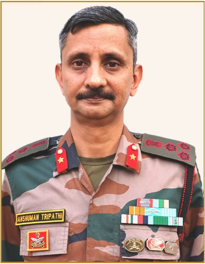

Words from those who made this journey possible.
Manipur is endowed with an extraordinary wealth of natural beauty, cultural diversity and living traditions. Amidst its verdant hills and valleys lie destinations that remain relatively unexplored, offering visitors an opportunity to experience the State in its most authentic form.
The hill districts of Tamenglong, Senapati and Noney are particularly blessed with pristine landscapes, rich biodiversity, vibrant communities and distinctive cultural traditions. Their trekking trails, forests, waterfalls, places of faith and colourful festivals present immense possibilities for nature, adventure and cultural tourism.
Tourism is much more than travel. It creates opportunities for greater understanding between people, supports local livelihoods and enterprise, and encourages communities to preserve their natural and cultural heritage. As connectivity improves and new destinations become more accessible, it is equally important that tourism develops responsibly, with due regard for the environment and the traditions of local communities.
JOURNEY - Through Manipur's Hidden Paradise is a commendable endeavour to introduce readers to the distinctive character of these hills. Through its portrayal of the landscapes, people, culture and experiences of these three districts, the publication offers an invitation to discover Manipur beyond its familiar destinations.
I appreciate the initiative of Assam Rifles in bringing out this publication and contributing towards greater awareness of the tourism potential of the region.
I hope JOURNEY inspires more people to explore these beautiful hills, experience the warmth of their communities and develop a deeper appreciation of the many facets of Manipur.
I convey my best wishes to all those associated with this endeavour.
Shri Ajay Kumar Bhalla
Hon'ble Governor of Manipur
Lt Gen Girish Kalia, AVSM, VSM
GOC, 3 Corps
The hills of Manipur are endowed with immense natural beauty, cultural richness and a character uniquely their own. Tamenglong, Senapati and Noney, with their spectacular landscapes, diverse communities and distinctive destinations, offer experiences that deserve a wider place on the tourism map of the country.
The true potential of such regions unfolds when peace, connectivity and opportunity converge. Improved road, rail and air connectivity is steadily bringing remote areas closer, opening new possibilities for travel, enterprise and interaction. A secure and stable environment provides the confidence necessary for these opportunities to flourish.
Tourism has an important role in this transformation. Beyond creating livelihoods and encouraging local enterprise, it brings people together. Every journey into these hills provides an opportunity to experience different cultures, understand local traditions and build connections that transcend geography.
JOURNEY - Through Manipur's Hidden Paradise captures this spirit of discovery. By showcasing the trekking trails, biodiversity, cultures, festivals and natural splendour of Tamenglong, Senapati and Noney, the publication brings to the fore a remarkable part of Manipur that deserves to be experienced by a wider audience
I commend 22 Sector Assam Rifles for conceiving and bringing out this publication and, more importantly, for its sustained efforts to strengthen bonds with local communities and create opportunities for constructive engagement. Such initiatives reflect the wider role of Assam Rifles in fostering confidence and contributing to an environment conducive to peace, progress and development in the region.
I am confident that JOURNEY will encourage travellers to venture beyond familiar destinations, discover the extraordinary character of these hills and forge a deeper connection with their people. I wish the publication and the team behind it every success.
The story of Assam Rifles in the Northeast is deeply intertwined with the land and its people. Over generations of service in some of the most remote parts of the region, this association has grown beyond the traditional responsibilities of security into an enduring relationship founded on trust, understanding and shared aspirations.
The hill districts of Tamenglong, Senapati and Noney reflect the remarkable diversity of Manipur. Their pristine landscapes, rich biodiversity, vibrant traditions and resilient communities hold immense potential, much of which remains relatively unknown beyond the region.
For Assam Rifles, serving amongst these communities also means understanding their aspirations and contributing, wherever possible, towards creating opportunities for their youth and supporting community development. Our engagement through sports, education, healthcare, community infrastructure, environmental initiatives and youth outreach represents different facets of this enduring partnership.
JOURNEY - Through Manipur's Hidden Paradise carries this engagement into another meaningful dimension By bringing together the landscapes, people, traditions and experiences of these three districts, the publication seeks to introduce a wider audience to a region whose beauty is matched by the character of its people.
I compliment 22 Sector Assam Rifles for conceiving and bringing out this thoughtful publication, and for its sustained engagement with the communities it serves.
I am confident that JOURNEY will encourage more people to discover these magnificent hills, appreciate their heritage and experience Manipur beyond the familiar.
I wish the publication every success.
Maj Gen Inderjit Singh Bhinder
IGAR (E)

Brig Anshuman Tripathi
Cdr 22 Sector Assam Rifles
Serving in the hills of Manipur offers a perspective that few journeys can replicate. Beyond the familiar routes lie remarkable landscapes, vibrant communities and places whose beauty and character often remain known only to those who live and travel through these regions.
It was from this perspective that JOURNEY - Through Manipur's Hidden Paradise was conceived.
The districts of Tamenglong, Senapati and Noney possess a distinctive character of their own. From forested hills, valleys and trekking trails to rich biodiversity, places of faith, colourful festivals and enduring traditions, each has a story waiting to be discovered.
Through JOURNEY, 22 Sector Assam Rifles has endeavoured to bring these stories together in a form that is both informative and inviting. More than a collection of destinations, the publication seeks to guide the traveller through the region-how to reach it, what to explore and, importantly, how to experience the people and traditions that give these hills their identity.
Our association with the region has been enriched by the trust and goodwill of its people. This publication is, in many ways, a celebration of that relationship and of the communities whose resilience and heritage make these hills truly special.
I acknowledge with gratitude the support of the civil administration, local communities, contributors, photographers and all ranks whose collective effort has transformed this idea into reality.
May JOURNEY inspire its readers to take the road less travelled, discover these remarkable hills and return with not merely memories of beautiful places, but a deeper appreciation of the people who call them home.
Every journey begins with curiosity — the desire to look beyond the familiar, take an unfamiliar road and discover what lies beyond the next hill.
JOURNEY - Through Manipur's Hidden Paradise is an invitation to do just that. Across Tamenglong, Senapati and Noney, winding roads lead through forested hills and valleys, trails open onto spectacular vistas, and waterfalls, caves and rich biodiversity share the landscape with communities whose cultures and traditions have evolved over generations.
In putting together JOURNEY, we have tried to see these hills through the eyes of a traveller: How do I get there? What awaits me? What should I explore? And what makes the journey worth taking?
The pages ahead take you beyond destinations—from routes and trails to flora and fauna, places of faith and colourful festivals, and ultimately to the people who give these hills their distinctive character.
Yet no publication can quite capture the silence of a forest trail, the warmth of a village, the energy of a festival or the view from a mountain ridge. Those experiences belong to the journey itself.
Turn the page. Take the road. Begin your JOURNEY.